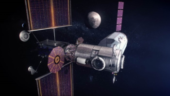
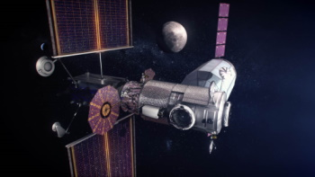

Lunar Gateway est le futur des stations spatiales puisque qu’elle est destinée dans un futur proche à remplacer l’ISS qui commence à subir certaine dégradation.
Cette station a pour principale objectif de relais pour les futures expéditions dans l’espace interplanétaire.
Cette station a une orbite rectilinéaire autour de la Lune c’est une orbite en halo comme le montre l’image.
Les 2 premiers modules qui devraient arriver d’ici novembre 2024 Sont :
- Le PPE (Power and Propulsion Element)
- HALO (Habitation and Logistics Outpost)
Le PPE a pour objectif de d’abord produire de l’énergie. La propulsion est-elle fournie par des moteurs ioniques.
Le module a également les systèmes de télécommunications avec la terre mais aussi avec la lune.
Celui-ci a pour budget de 375 millions de $.
Le module HALO a pour objectif d’abriter des futurs astronautes : c’est le module d’habitations.
On y retrouve divers équipement comme un système de communication
ou de support de vie qui allier à la capsule Orion permet a un équipage de 4 personnes de vivre pour 30jours.
 
